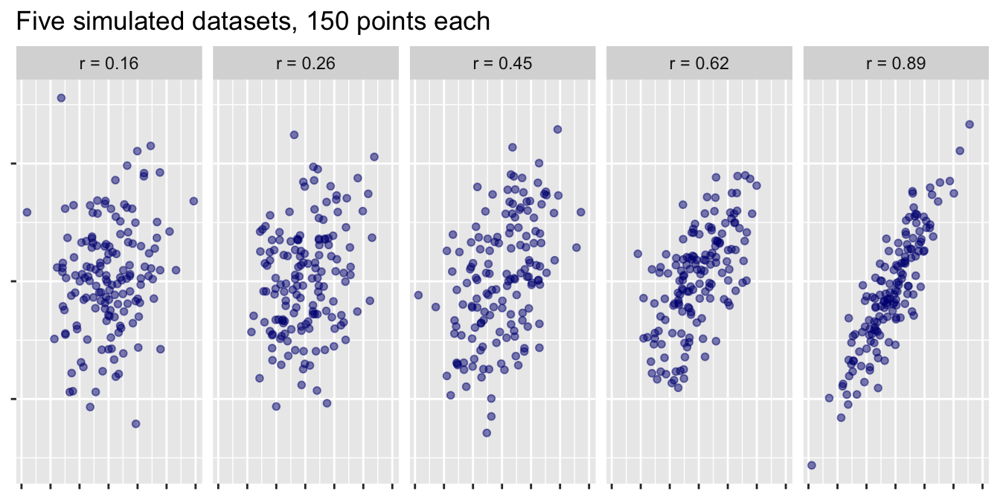
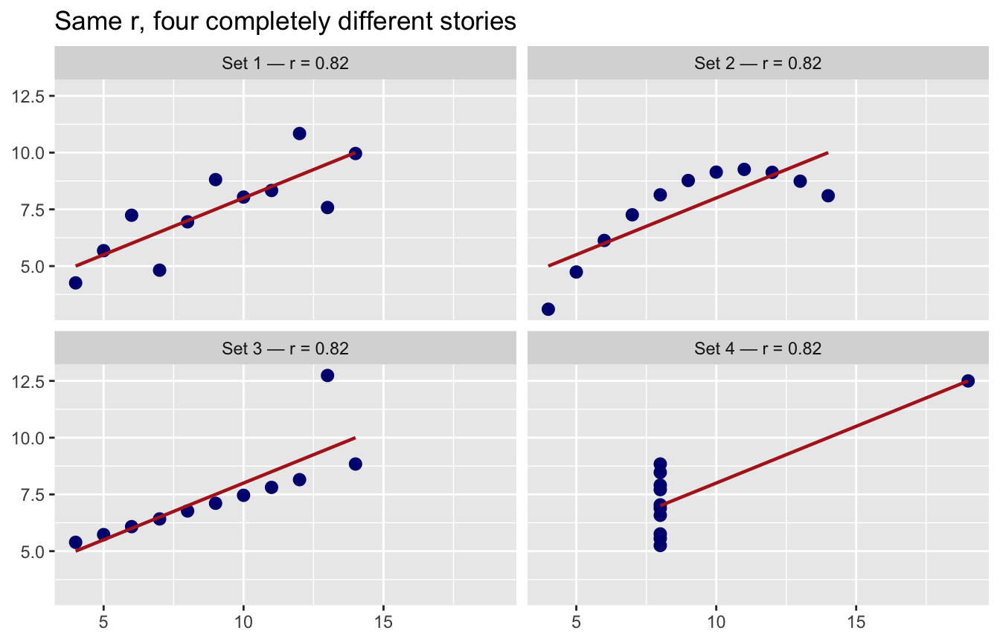
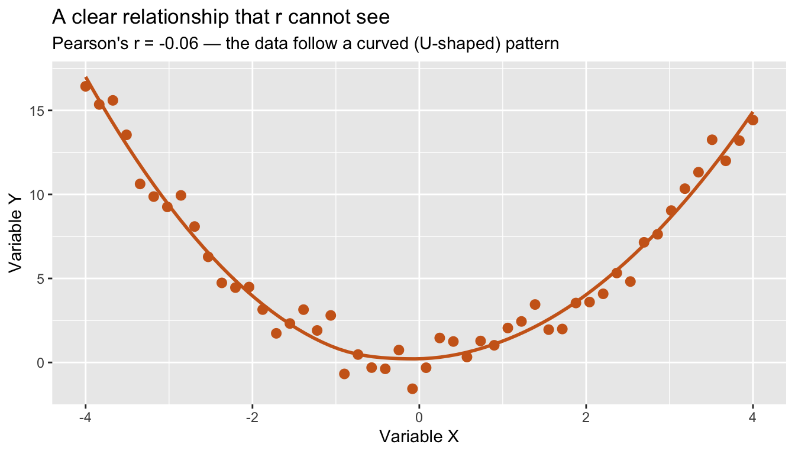
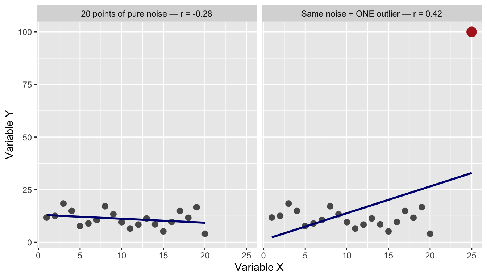
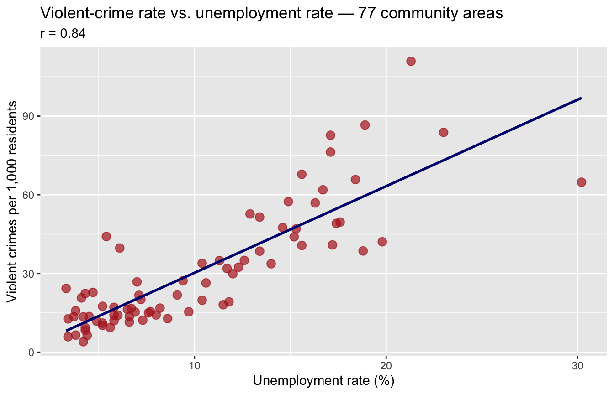
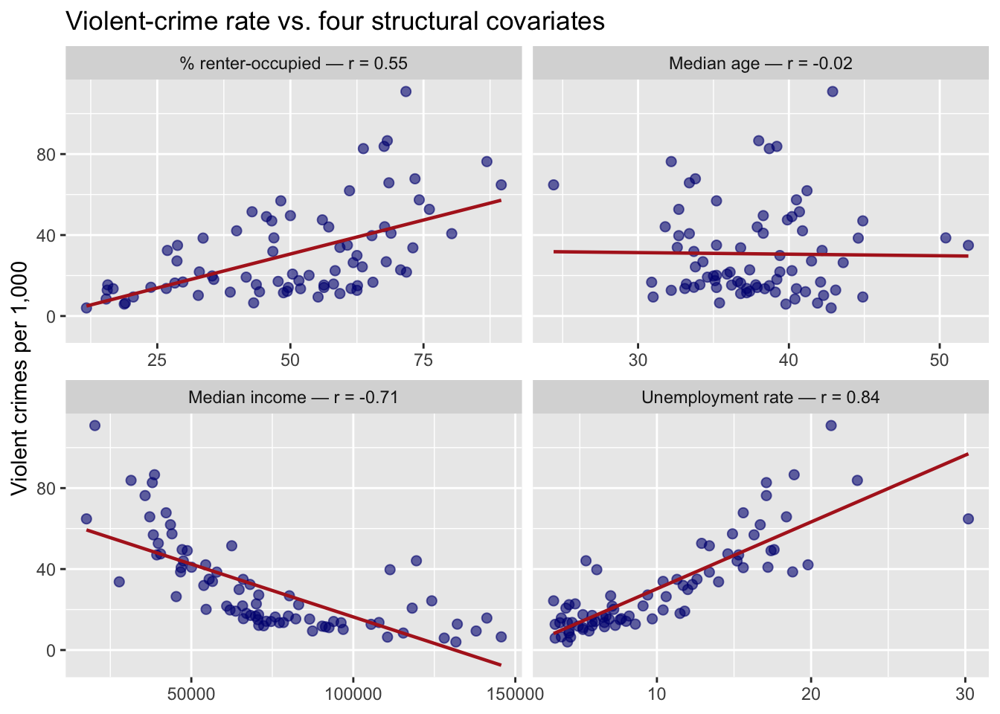

Demo Walkthrough · Session 10
Correlation — covariance, Pearson’s r, and what r cannot see
What this page is. The Session 10 lecture demos, written down step by step. Every chunk below is self-contained — copy any of them into your own R session and they run as-is. Use this page to catch up after a missed class, or to re-run what happened on screen at your own pace.
What you’ll build
- Covariance on real Chicago data — and the units problem that makes it uninterpretable
- Pearson’s r as rescaled covariance, computed by hand before
cor()does it for you - A calibration grid: what r = 0.1 through 0.9 actually look like
- Three demonstrations of what r cannot see — identical summaries, curves, and one point that flips a sign
- Spearman’s rho as the rank-based backup
- The real question: which structural features of Chicago’s 77 community areas track violence — with inference in both traditions, and the ecological-fallacy guardrail on every claim
Setup
Everything below needs the tidyverse, the correlation package (easystats — install once with install.packages("correlation")), and the second level of the course’s anchor data: 2025’s incidents aggregated to the 77 community areas and joined with Census measures.
1 · Covariance: moving together, in raw units
Observation by observation: do x and y sit on the same side of their means?
\[\text{cov}(x, y) \;=\; \frac{\sum_i (x_i - \bar{x})(y_i - \bar{y})}{n - 1}\]
Both above average (or both below) → positive products → positive covariance; opposite sides → negative. The sign is trustworthy. The size is not — watch what happens on real data:
cov(areas$unemployment_rate, areas$violent_rate)[1] 107.7543cov(areas$median_income, areas$violent_rate)[1] -482660.1Is −482,660 a “stronger” relationship than 108? No idea — the first number lives in dollars × crimes per 1,000, the second in percentage points × crimes per 1,000. Covariance is glued to its units. You can’t compare across pairs.
2 · Correlation rescales it
Divide the covariance by both standard deviations and the units cancel:
\[r \;=\; \frac{\text{cov}(x, y)}{s_x \, s_y}\]
[1] 0.8398579cor(areas$unemployment_rate, areas$violent_rate) # same thing, one function[1] 0.8398579Always between −1 and +1, unit-free, comparable: income runs r = −0.71 with violence — so unemployment (0.84) tracks violence more tightly than income does, direction aside. The conventional reading bands (|r| beyond ≈ 0.7 “strong,” 0.4–0.7 “moderate,” under 0.3 “weak”) are conventions, not laws — in messy social-science data, a “moderate” r can be a major finding.
3 · Calibrate your eye
Before trusting the bands, see them. Simulate five datasets with known correlations and look:
set.seed(705) # inline seed: keeps these particular clouds (and their r labels) stable
r_targets <- c(0.1, 0.3, 0.5, 0.7, 0.9)
r_grid <- map(r_targets, \(r) {
x <- rnorm(150)
y <- r * x + sqrt(1 - r^2) * rnorm(150)
tibble(label = paste0("r = ", sprintf("%.2f", cor(x, y))), x = x, y = y)
}) |>
list_rbind() |>
mutate(label = fct_inorder(label))
ggplot(r_grid, aes(x, y)) +
geom_point(alpha = 0.5, size = 1.4, color = "navy") +
facet_wrap(~label, nrow = 1) +
labs(title = "Five simulated datasets, 150 points each",
x = NULL, y = NULL) +
theme(axis.text = element_blank())
(The panel labels show each sample’s achieved r — 150 draws don’t land exactly on the target, which is Session 4’s sampling variability all over again.) By ≈ 0.5 the trend is visible; below ≈ 0.2 your eye mostly sees noise — and it’s right. Negative correlations look identical with the tilt reversed.
4 · What r cannot see
Same summaries, four different stories
Anscombe’s quartet ships with R (Anscombe, 1973) — four little datasets engineered to share their summary statistics:
anscombe_long <- anscombe |>
pivot_longer(everything(), names_to = c(".value", "set"), names_pattern = "(.)(.)")
anscombe_long |>
summarize(mean_x = mean(x), mean_y = mean(y), r = cor(x, y), .by = set)# A tibble: 4 × 4
set mean_x mean_y r
<chr> <dbl> <dbl> <dbl>
1 1 9 7.50 0.816
2 2 9 7.50 0.816
3 3 9 7.5 0.816
4 4 9 7.50 0.817ggplot(anscombe_long, aes(x, y)) +
geom_point(size = 2.5, color = "navy") +
geom_smooth(method = "lm", se = FALSE, color = "firebrick", linewidth = 0.8) +
facet_wrap(~set, labeller = labeller(set = \(s) paste0("Set ", s, " — r = 0.82"))) +
labs(title = "Same r, four completely different stories", x = NULL, y = NULL)
Same means, same r = 0.82 — statistically interchangeable, and only Set 1 is what you picture when someone says “r = 0.82.” Always plot before you correlate.
Limitation 1: r only sees straight lines
set.seed(705) # inline seed: stable curve
u_data <- tibble(
x = seq(-4, 4, length.out = 50),
y = x^2 + rnorm(50, 0, 1)
)
ggplot(u_data, aes(x, y)) +
geom_point(size = 2.5, color = "chocolate3") +
geom_smooth(method = "loess", se = FALSE, color = "chocolate3") +
labs(title = "A clear relationship that r cannot see",
subtitle = paste0("Pearson's r = ", sprintf("%.2f", cor(u_data$x, u_data$y)),
" — the data follow a curved (U-shaped) pattern"),
x = "Variable X", y = "Variable Y")
Think stress vs. performance: an inverted U. r ≈ 0 means no linear relationship — not no relationship.
Limitation 2: one point can manufacture a correlation
Twenty points of pure noise, then the same twenty plus a single wild pair:
set.seed(705) # inline seed: stable demo — the numbers below depend on it
base_data <- tibble(x = 1:20, y = rnorm(20, 10, 4)) # pure noise
outlier_data <- bind_rows(base_data, tibble(x = 25, y = 100))
bind_rows(
base_data |> mutate(version = paste0("20 points of pure noise — r = ",
sprintf("%.2f", cor(base_data$x, base_data$y)))),
outlier_data |> mutate(version = paste0("Same noise + ONE outlier — r = ",
sprintf("%.2f", cor(outlier_data$x, outlier_data$y))))
) |>
mutate(version = fct_inorder(version)) |>
ggplot(aes(x, y)) +
geom_point(size = 2.5, color = "grey35") +
geom_point(data = \(d) filter(d, y > 50), color = "firebrick", size = 4.5) +
geom_smooth(method = "lm", se = FALSE, color = "navy") +
facet_wrap(~version) +
labs(x = "Variable X", y = "Variable Y")
Two lessons in one picture. First, the noise-only panel gave r = −0.28 — small samples produce correlations out of nothing; that’s why we test rather than just compute. Second, adding one extreme pair swung r from −0.28 to +0.42 — a single point flipped the sign and manufactured a “moderate positive” correlation. Neither number describes a real relationship. (Outliers can also work the other way, hiding a real correlation.) Defense one is plotting first — you’d catch this instantly. Defense two is a correlation that doesn’t care about wild values:
The rank-based backup: Spearman’s rho
Replace each value with its rank (1st, 2nd, 3rd…), then correlate the ranks. Spearman asks only: is the relationship consistently up or consistently down?
pearson spearman
0.4235804 -0.1142857 To Spearman, the wild point is just “rank 21”: it drifts from −0.29 to −0.11 — sign intact, still weak — while Pearson swung 0.70 and flipped sign. When data are skewed or outlier-prone, check Spearman alongside Pearson.
5 · Real data: structure and violence across Chicago
A classic criminology-of-place question: which structural features of a neighborhood track its violence?
# A tibble: 3 × 5
community violent_rate unemployment_rate median_income pct_vacant
<chr> <dbl> <dbl> <dbl> <dbl>
1 Rogers Park 21.7 7.1 60916 9.5
2 West Ridge 12.2 7.3 70823 7.7
3 Uptown 22.8 4.7 70067 9.1Rule from Section 4: plot first. One dot = one community area:
ggplot(areas, aes(unemployment_rate, violent_rate)) +
geom_point(size = 3, alpha = 0.7, color = "firebrick") +
geom_smooth(method = "lm", se = FALSE, color = "navy") +
labs(title = "Violent-crime rate vs. unemployment rate — 77 community areas",
subtitle = paste0("r = ", sprintf("%.2f", cor(areas$unemployment_rate, areas$violent_rate))),
x = "Unemployment rate (%)", y = "Violent crimes per 1,000 residents")
r = 0.84 — about as strong as area-level associations get in criminology. And the full menu, in one dataset:
areas |>
select(violent_rate, unemployment_rate, pct_renter, median_income, median_age) |>
pivot_longer(-violent_rate, names_to = "covariate", values_to = "value") |>
mutate(covariate = case_match(covariate,
"unemployment_rate" ~ paste0("Unemployment rate — r = ",
sprintf("%.2f", cor(areas$unemployment_rate, areas$violent_rate))),
"pct_renter" ~ paste0("% renter-occupied — r = ",
sprintf("%.2f", cor(areas$pct_renter, areas$violent_rate))),
"median_income" ~ paste0("Median income — r = ",
sprintf("%.2f", cor(areas$median_income, areas$violent_rate))),
"median_age" ~ paste0("Median age — r = ",
sprintf("%.2f", cor(areas$median_age, areas$violent_rate))))) |>
ggplot(aes(value, violent_rate)) +
geom_point(alpha = 0.6, size = 2, color = "navy") +
geom_smooth(method = "lm", se = FALSE, color = "firebrick", linewidth = 0.8) +
facet_wrap(~covariate, scales = "free_x") +
labs(title = "Violent-crime rate vs. four structural covariates",
x = NULL, y = "Violent crimes per 1,000")
Strong positive (unemployment, 0.84), moderate positive (renters, 0.55), strong negative (income, −0.71) — and one genuine nothing (median age, −0.02). Real data span the whole menu. Income is also where Pearson and Spearman disagree: the decline is real but bent — steep across lower-income areas, nearly flat past ≈ $90k — and income is right-skewed, so the rank-based Spearman (−0.82) runs stronger than Pearson (−0.71) because it only asks “downhill?”, not “straight line?”:
6 · These are areas, not people
Our r = 0.84 says: community areas with higher unemployment rates record more violent crime per 1,000 residents.
The ecological fallacy: using an aggregate-level association to make claims about individuals. Our data contain no individuals — every resident of an area gets the same 77 values. Nothing here says unemployed people commit violence.
Saying it out loud, area-data edition. ✅ Defensible: “Community areas with higher unemployment rates recorded higher violent-crime rates (r = 0.84).” ❌ Not defensible: “Unemployed residents commit more violent crime” — an individual-level claim these data can’t see. ❌ Also not defensible: “Unemployment drives up violence” — a causal claim, and concentrated disadvantage, disinvestment, and policing patterns all lurk behind both variables. Correlation is a pattern, not proof of cause.
The classic demonstration (Robinson, 1950): across U.S. states, more foreign-born residents went with higher literacy; across individuals, foreign-born residents had lower literacy. Same data, opposite signs — immigrants had settled in high-literacy states. Aggregation can weaken, exaggerate, or even flip an individual-level relationship.
7 · Putting uncertainty on r
We can see r = 0.84. The frequentist question: if nothing truly connected these variables, how often would 77 paired observations line up this tightly by luck? One function does the whole thing:
cor.test(areas$unemployment_rate, areas$violent_rate)
Pearson's product-moment correlation
data: areas$unemployment_rate and areas$violent_rate
t = 13.4, df = 75, p-value < 2.2e-16
alternative hypothesis: true correlation is not equal to 0
95 percent confidence interval:
0.7585749 0.8954023
sample estimates:
cor
0.8398579 Reading it honestly: r = 0.84, t(75) = 13.4, p < .001 — a null world essentially never produces this — with 95% CI [0.76, 0.90], read exactly as Session 5 taught (the procedure captures the truth in 95% of replications). Two perspective checks. First, with n = 77, any |r| above about 0.22 clears p < .05 — significance is a low bar, and the strength is the story. Second, these 77 areas are all of Chicago, not a sample from a bag of Chicagos — read the null as a claim about the process generating neighborhood outcomes, not a larger population of areas.
Real analyses rarely stop at one pair. The correlation package tests every pair, attaches CIs, and Holm-adjusts the p-values for the number of pairs — six tests at once is exactly Session 8’s pile-of-tests problem, handled by default:
areas |>
select(violent_rate, unemployment_rate, median_income, pct_vacant) |>
correlation()# Correlation Matrix (pearson-method)
Parameter1 | Parameter2 | r | 95% CI | t(75) | p
-----------------------------------------------------------------------------------
violent_rate | unemployment_rate | 0.84 | [ 0.76, 0.90] | 13.40 | < .001***
violent_rate | median_income | -0.71 | [-0.80, -0.57] | -8.66 | < .001***
violent_rate | pct_vacant | 0.81 | [ 0.72, 0.88] | 12.00 | < .001***
unemployment_rate | median_income | -0.81 | [-0.88, -0.72] | -12.05 | < .001***
unemployment_rate | pct_vacant | 0.67 | [ 0.52, 0.78] | 7.78 | < .001***
median_income | pct_vacant | -0.55 | [-0.69, -0.37] | -5.67 | < .001***
p-value adjustment method: Holm (1979)
Observations: 778 · The Bayesian version
Same package, one new argument — and unlike brms in Session 8, no compilation wait; this samples in a blink. Instead of a single r and a p-value, you get a posterior distribution of plausible correlation values:
set.seed(705) # inline seed: posterior sampling, keeps printed values stable
areas |>
select(violent_rate, unemployment_rate) |>
correlation(bayesian = TRUE)# Correlation Matrix (pearson-method)
Parameter1 | Parameter2 | rho | 95% CI | pd | % in ROPE
----------------------------------------------------------------------------
violent_rate | unemployment_rate | 0.82 | [0.73, 0.87] | 100%*** | 0%
Parameter1 | Prior | BF
------------------------------------------
violent_rate | Beta (3 +- 3) | 6.64e+17***
Observations: 77Four read-outs, one line each. rho ≈ 0.82 is the posterior median — a touch below the frequentist 0.84, which is the prior’s gentle pull toward zero. The 95% CI [≈ 0.73, 0.87] is a credible interval: given data and prior, 95% probability ρ lies in this range — the direct statement Session 5 taught you the confidence interval can’t make. pd = 100% is the posterior probability the correlation is positive, and 0% in ROPE says none of the posterior sits in a “practically zero” band. The BF ≈ 10¹⁷ means the data are astronomically more likely under “correlated” than “not” — on Session 6’s scale, anything past 100 is extreme evidence.
But the priors…
The prior here encodes mild skepticism — real-world correlations are rarely extreme — gently pulling estimates toward 0. The default is "medium"; loosen it and see what moves:
set.seed(705) # inline seed: posterior sampling
areas |>
select(violent_rate, unemployment_rate) |>
correlation(bayesian = TRUE, bayesian_prior = "wide")# Correlation Matrix (pearson-method)
Parameter1 | Parameter2 | rho | 95% CI | pd | % in ROPE
----------------------------------------------------------------------------
violent_rate | unemployment_rate | 0.83 | [0.75, 0.89] | 100%*** | 0%
Parameter1 | Prior | BF
------------------------------------------------
violent_rate | Beta (1.73 +- 1.73) | 2.05e+18***
Observations: 77Almost nothing — here. The wide prior is less skeptical of big correlations, so it shrinks rho toward 0 slightly less, and the estimate creeps toward the raw 0.84. With 77 areas of strongly correlated data, the data dominate: the prior choice moves the second decimal. With 15 areas and a modest correlation, the same choice could visibly move the estimate — priors matter most when data are thin. Practical rule for this course: defaults are fine — but say which prior you used. If your conclusion survives medium and wide, say that too; it’s a free robustness check. (Same reporting habit as Session 8’s brms defaults — the badge changes, the rule doesn’t.)
Try a variation
-
pct_no_hs_diplomais the share of an area’s adults without a high-school diploma. Before computing anything, write down your predicted sign and rough size for its correlation withviolent_rate— then plot it and runcor.test(). Most people predict a strong positive; check what the data actually say, then trypct_bachelors. - In the outlier demo, change the wild point from
y = 100toy = 40, theny = 15. Where’s the threshold at which Pearson stops being fooled — and does Spearman ever care? - Add
pct_vacantandmedian_rentto thecorrelation()call. With more pairs, what happens to the Holm-adjusted p-values of the correlations you already had? - Re-run the Bayesian pair on a thinner dataset:
areas |> slice_sample(n = 15)first. Now comparebayesian_prior = "medium"vs."wide"— this is the “priors matter when data are thin” lesson, live.